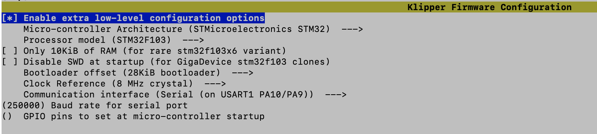

Installation Details
- Used KIAUH to install klipper, moonraker and fluidd on a Raspberry Pi.
- On the Raspberry Pi, used the Klipper "make menuconfig" to generate firmware to install on the printer to allow it to be controlled from klipper. Options as follows

- Grab the bin file from the /hone/pi/klipper/home folder and copy it to my computer using scp, then onto a blank formatted fat32 SD card. Load it into the printer, start up the printer, and leave a couple of minutes
- Klipper Printer Config (Settings for printer e.g. probe, mesh, offsets etc.)
- Start klipper and open the configuration tab
- Copy the contents of the ender 3 V2 config file from config examples into the printer.cfg file, which should already exist
- Update mcu serial entry. (with USB connected to pi and printer, use "ls /dev/serial/by-id" to see serial devices, and copy the path into the config)
- Update the file to include fluidd.cfg by adding the line [include fluidd.cfg]
- Update bltouch, mesh and z probe settings in printer.cfg
-
[stepper_z]
step_pin: PB6
dir_pin: !PB5
enable_pin: !PC3
microsteps: 16
rotation_distance: 8
endstop_pin: probe:z_virtual_endstop
#position_endstop: 0.0
position_max: 250
[bltouch]
sensor_pin: ^PB1
control_pin: PB0
x_offset: -43.0
y_offset: -7.0
z_offset: 1.82
[safe_z_home]
home_xy_position: 117.5, 117.5
z_hop: 10
z_hop_speed: 5
[bed_mesh]
speed: 120
horizontal_move_z: 5
mesh_min: 15,15
mesh_max: 191,200
probe_count: 8,8
algorithm: bicubic
fade_start: 1
fade_end: 10
fade_target: 0
-
Add start and end macros to the printer.cfg:
[gcode_macro START_PRINT]
gcode:
{% set BED_TEMP = params.BED_TEMP|default(60)|float %}
{% set EXTRUDER_TEMP = params.EXTRUDER_TEMP|default(190)|float %}
# Start bed heating (but don't wait for it)
M140 S{BED_TEMP}
# Use absolute coordinates
G90
# Home the printer
G28
# load default mesh
BED_MESH_PROFILE LOAD="default"
# Wait for bed to reach temperature
M190 S{BED_TEMP}
# Set and wait for nozzle to reach temperature
M109 S{EXTRUDER_TEMP}
G92 E0 ; Reset extruder origin
G1 Z2.0 F3000 ; Move Z Axis up little to prevent scratching of Heat Bed
G1 X0.1 Y20 Z0.3 F5000.0 ; Move to start position
G1 X0.1 Y200.0 Z0.3 F1500.0 E15 ; Draw the first line
G1 X0.4 Y200.0 Z0.3 F5000.0 ; Move to side a little
G1 X0.4 Y20 Z0.3 F1500.0 E30 ; Draw the second line
G92 E0 ; Reset Extruder
G1 Z2.0 F3000 ; Move Z Axis up little to prevent scratching of Heat Bed
G1 X5 Y20 Z0.3 F5000.0 ; Move over to prevent blob squish
[gcode_macro END_PRINT]
gcode:
# Turn off bed, extruder, and fan
M140 S0
M104 S0
M106 S0
# Move nozzle away from print while retracting
G91
G1 X-2 Y-2 E-3 F300
# Raise nozzle by 10mm
G1 Z10 F3000
G90
G28 X
# Disable steppers
M84
Simplfy Cura start and end g-code:
start code is this (all one line):
START_PRINT EXTRUDER_TEMP={material_print_temperature_layer_0} BED_TEMP={material_bed_temperature_layer_0}
end code is this:
END_PRINT